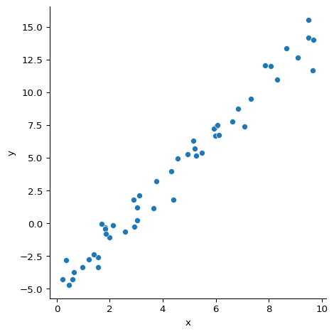
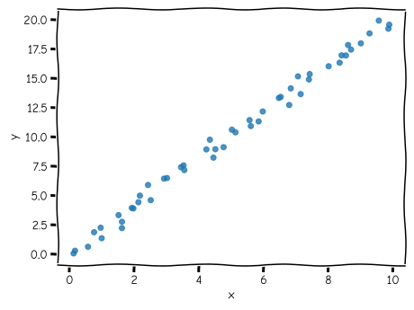
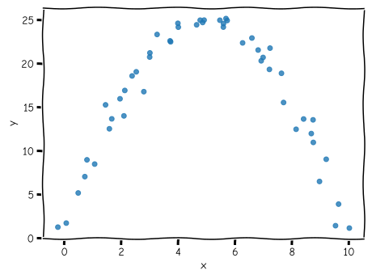
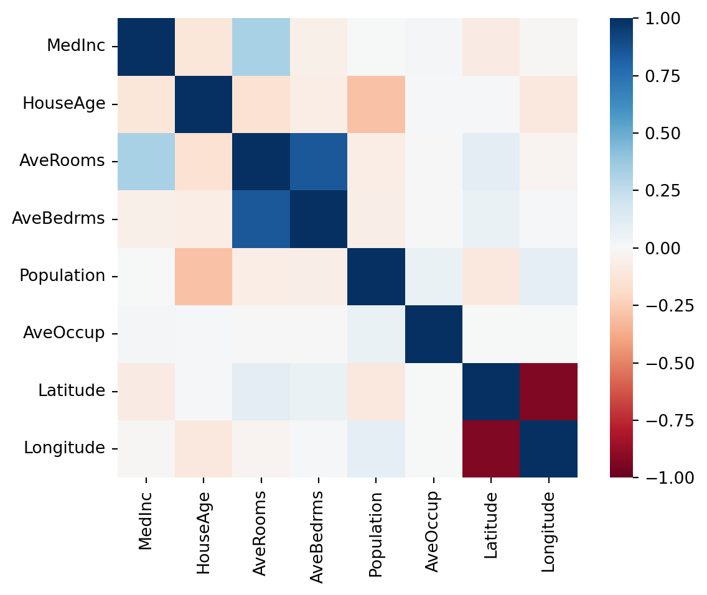
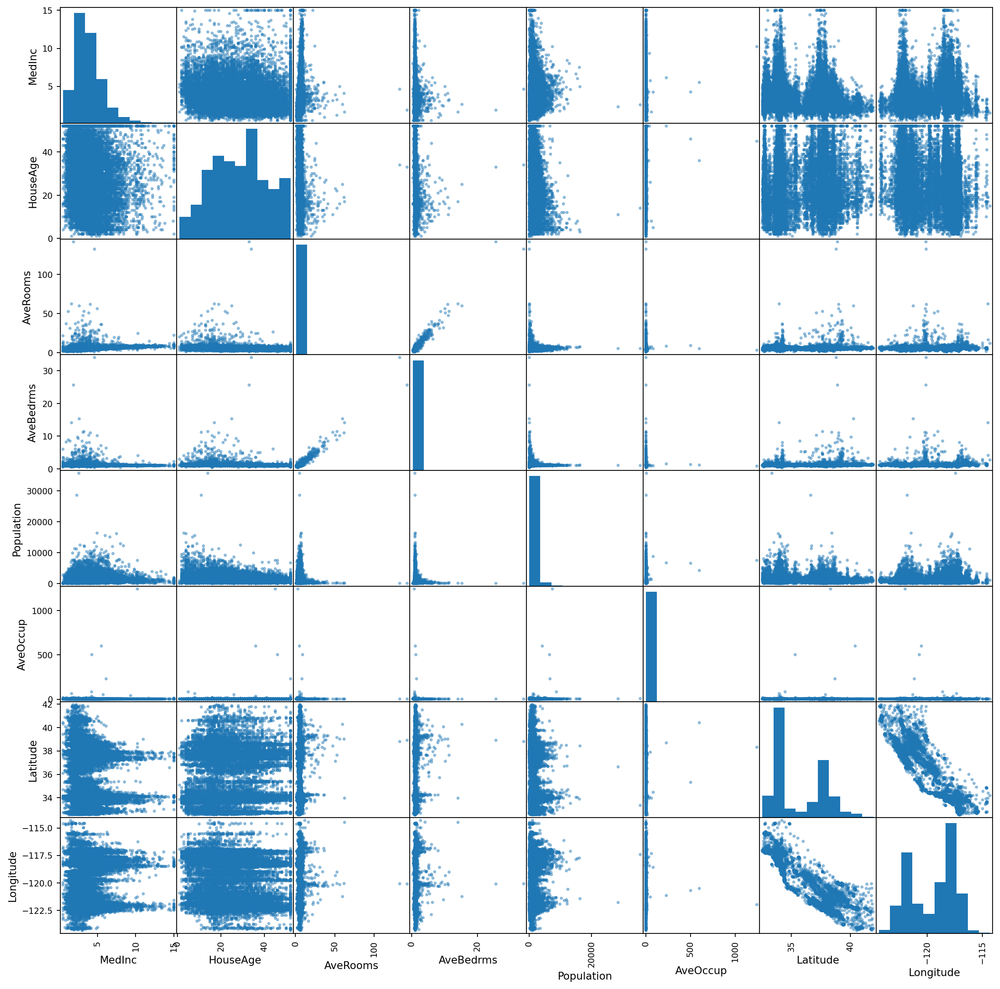

| x | y | |
|---|---|---|
| 0 | 3.745401 | 3.229269 |
| 1 | 9.507143 | 14.185654 |
| 2 | 7.319939 | 9.524231 |
| 3 | 5.986585 | 6.672066 |
| 4 | 1.560186 | -3.358149 |
Loading your data
First we shall need some data. For this example we shall be pretending that we have measured these data from an experiment and we want to extract the underlying parameters of the system that generated them.
I have prepared a CSV file which you can read into pandas using read_csv:
import pandas as pd
data = pd.read_csv("https://bristol-training.github.io/applied-data-analysis-in-python/data/linear.csv")
data.head()We can see here that the data has two columns, x and y. Traditionally, \(x\) is used for the things we can easily measure in the world and use as inputs, and \(y\) is used for the thing we want to predict. In our case, we want to work out what the value of \(y\) should be for any given \(x\).
In this case we have one single \(x\) column but in a more complicated data set we may have multiple \(x_1\), \(x_2\) etc. in which case the set together is sometimes given the upper-case letter \(X\). Each \(x_n\) column is called a feature. Features are usually things that you have measured as part of a experiment (e.g. height of a person, temperature of a room, size of a garden etc.).
Our \(y\) column is the thing that we are going to create a model to predict the value of. The \(y\) column of the input data is often called the label or the target.
Let’s check how many rows we have:
data.count()x 50
y 50
dtype: int64We have 50 rows here. In the input data, each row is often called a sample (though sometimes also called an instance, example or observation). For example, it could be the information about a single person from a census or the measurements at a particular time from a weather station.
Let’s have a look at what the data looks like when plotted:
import seaborn as sns
sns.relplot(data=data, x="x", y="y")
We can clearly visually see here that there is a linear relationship between the \(x\) and \(y\) values but we need to be able to extract the exact parameters programmatically.
Exploratory data analysis using Correlation
When presented with a new collection of data, one of the first questions you may ask is how they are related to each other. This can involve deep study of how one parameter is likely to vary as you change another but the simplest start is to look a the linear correlation between them.
Correlation is usually taught as being the degree to which two variables are linearly related, that is as one increases, on average how much does the other one increase. This is a useful measure because it’s easy to calculate and most data only have either linear relationships or no relationship at all.

However, correlation is a much broader idea than that and when doing machine learning, it’s worth understanding the bigger picture. At its core, correlation is a measure of how related two data sets are. The way I like to think of it is, if I know the value of one of the two ariables, how much information do I have about the value of the other.
To highlight this, consider the following two variables, \(x\) and \(y\):

They have a linear correlation of zero (on average as \(x\) increases, \(y\) stays the same) but if you know the value of \(X\), you clearly have information about what the value of \(y\) is likely to be.
The other way to think about it is in terms of mutual information. \(y\) is clearly sharing information with \(x\), otherwise there would be no visible pattern.
Multiple cross-correlation
It’s very common when working on real data that you have more than two figures of interest.
To get a sense of some real data, let’s look at a housing dataset provided by scikit-learn.
from sklearn.datasets import fetch_california_housing
housing, target = fetch_california_housing(as_frame=True, return_X_y=True)housing.head()| MedInc | HouseAge | AveRooms | AveBedrms | Population | AveOccup | Latitude | Longitude | |
|---|---|---|---|---|---|---|---|---|
| 0 | 8.3252 | 41.0 | 6.984127 | 1.023810 | 322.0 | 2.555556 | 37.88 | -122.23 |
| 1 | 8.3014 | 21.0 | 6.238137 | 0.971880 | 2401.0 | 2.109842 | 37.86 | -122.22 |
| 2 | 7.2574 | 52.0 | 8.288136 | 1.073446 | 496.0 | 2.802260 | 37.85 | -122.24 |
| 3 | 5.6431 | 52.0 | 5.817352 | 1.073059 | 558.0 | 2.547945 | 37.85 | -122.25 |
| 4 | 3.8462 | 52.0 | 6.281853 | 1.081081 | 565.0 | 2.181467 | 37.85 | -122.25 |
It has a row for each census block and a column for each feature, e.g. “median income of the block”, “average house age of the block” etc.
To get the linear correlation between all these features, we call the corr() method on the DataFrame:
housing.corr()| MedInc | HouseAge | AveRooms | AveBedrms | Population | AveOccup | Latitude | Longitude | |
|---|---|---|---|---|---|---|---|---|
| MedInc | 1.000000 | -0.119034 | 0.326895 | -0.062040 | 0.004834 | 0.018766 | -0.079809 | -0.015176 |
| HouseAge | -0.119034 | 1.000000 | -0.153277 | -0.077747 | -0.296244 | 0.013191 | 0.011173 | -0.108197 |
| AveRooms | 0.326895 | -0.153277 | 1.000000 | 0.847621 | -0.072213 | -0.004852 | 0.106389 | -0.027540 |
| AveBedrms | -0.062040 | -0.077747 | 0.847621 | 1.000000 | -0.066197 | -0.006181 | 0.069721 | 0.013344 |
| Population | 0.004834 | -0.296244 | -0.072213 | -0.066197 | 1.000000 | 0.069863 | -0.108785 | 0.099773 |
| AveOccup | 0.018766 | 0.013191 | -0.004852 | -0.006181 | 0.069863 | 1.000000 | 0.002366 | 0.002476 |
| Latitude | -0.079809 | 0.011173 | 0.106389 | 0.069721 | -0.108785 | 0.002366 | 1.000000 | -0.924664 |
| Longitude | -0.015176 | -0.108197 | -0.027540 | 0.013344 | 0.099773 | 0.002476 | -0.924664 | 1.000000 |
Here we see the features in our data set along both the rows and the columns. The correlation between each pair is given as a number between -1.0 and 1.0 where -1.0 is absolute inverse linear correlation, 1.0 is absolute positive linear correlation and zero is no linear correlation.
We see the the 1.0 occuring on the diagonal (because a variable is always completely correlated with itself) and a whole range of values between -1.0 and 1.0 off-diagonal.
If we want the correlation between two specific columns then we can request it from this object:
corr = housing.corr()
corr["MedInc"]["AveRooms"]np.float64(0.32689543164129786)Plotting the correlation
Viewing the correlation coefficients as a table is useful if you want the precise value of the correlation but often you want a visual overview which can give you the information you want at a glance.
The easiest way to view it is as a heat map where each cell has a colour showing the value of the correlation using Seaborn which is a visualisation library that provides a higher-level interface to Matplotlib.
import seaborn as sns
sns.heatmap(corr, vmin=-1.0, vmax=1.0, square=True, cmap="RdBu")
This gives us a sense of which parameters are strongly correlated with each other. Very blue squares are positively correlated, for example the average number of rooms and the average number of bedrooms. That correlation makes sense as they definitely have mutual information.
Others perhaps make less sense at a glance. We see that the latitude is very strongly negatively correlated with the longitude. Why on earth should there be any relationship between those two? Let’s take a look at another view on the data to see if we can discover why.
Multi-variable scatter matrix
Pandas also provides a quick method of looking at a large number of data parameters at once and looking visually at which might be worth investigating. If you pass any pandas DataFrame to the scatter_matrix() function then it will plot all the pairs of parameters in the data.
The produced graph has a lot of information in it so it’s worth taking some time to make sure you understand these plots. The plot is arranged with all the variables of interest from top to bottom and then repeated from left to right so that any one square in the grid is defined by the intersection of two variables.
Each box that is an intersection of a variable with another (e.g. row three, column one is the intersection between “AveRooms” and “MedInc”) shows the scatter plot of how the values of those variables relate to each other. If you see a strong diagonal line it means that those variables are correlated in this data set. It it’s more of a blob or a flat horizontal or vertical line then that suggests a low correlation.
The top-right triangle of the plot is a repeat of the bottom-left triangle, just with the items in the pair reversed (i.e. row one, column three is the intersection between “MedInc” and “AveRooms”).
The square boxes along the diagonal from the top-left to the bottom-right are those intersections of a variable with itself and so are used, not to show correlation, but to show the distribution of values of each single variable as a histogram.
from pandas.plotting import scatter_matrix
a = scatter_matrix(housing, figsize=(16, 16))
In general, when calculating a regression, you want your features to be as uncorrelated with each other as possible. This is because if two features, \(x_1\) and \(x_2\) are strongly correlated with each other then it’s possible to predict the value of \(x_2\) from the value of \(x_1\) with high confidence. This means that \(x_2\) is not providing any additional predictive power.
In some cases this is not a problem as adding one extra variable does not slow down or harm the algorithm used but some methods benefit from choosing carefully the parameters which are being fitted over.
It’s also possible in some cases to transform the data in some way to reduce the correlation between variables. One example of a method which does this is principle component analysis (PCA).
On the other hand, you do want correlation between \(X\) and \(y\) as if there is no mutual information then there is no predictive power.